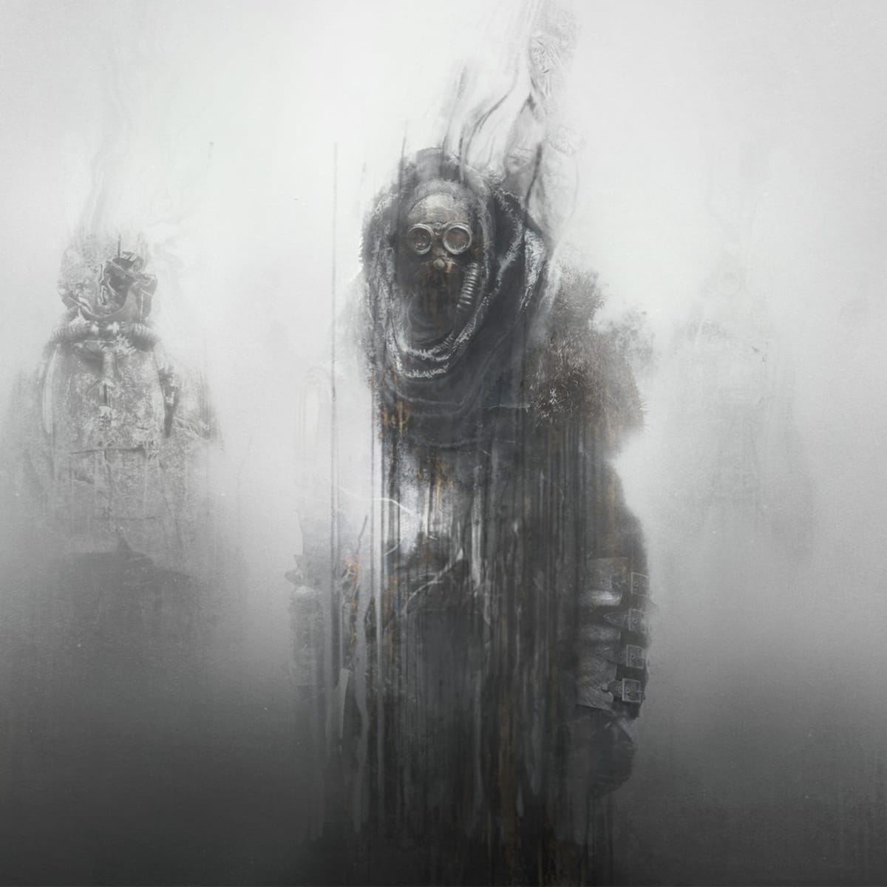
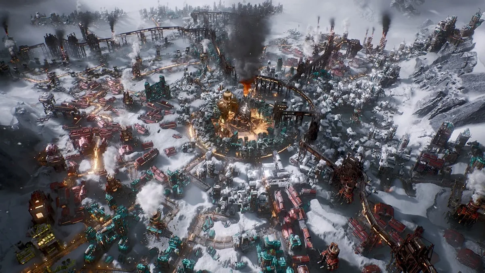

Frostpunk 2 — новий виток боротьби за виживання
Після приголомшливого успіху першої частини, Frostpunk 2 переносить нас у ще похмуріший, холодніший і жорсткіший світ постапокаліптичного майбутнього. Ця стратегічна гра в жанрі виживання продовжує традиції свого попередника, але пропонує значно глибший і масштабніший ігровий досвід.
Сюжет та атмосфера

Дія Frostpunk 2 відбувається через 30 років після Великого морозу. Людство все ще намагається відновитися після кліматичної катастрофи, яка знищила майже все живе на планеті. Ви керуєте містом, останньою надією людства, і маєте зробити все можливе для його виживання, приймаючи жорсткі моральні рішення.
Графіка та звук
Frostpunk 2 вражає не тільки глибиною сюжету, але й неймовірною атмосферою. Деталізовані міські пейзажі, засніжені гори й похмурі бурі на фоні створюють відчуття постійної небезпеки. Музичний супровід підкреслює трагічність і драматичність кожного моменту, занурюючи гравця у світ, де кожен день — це боротьба за виживання.
Ігровий процес
У Frostpunk 2 вам належить керувати не тільки ресурсами та будівництвом міста, але й політикою та взаєминами всередині громади. Кожне ваше рішення впливає на життя жителів та розвиток міста. Основна дилема гри — нафтовий бум. Світ на межі війни за новий джерело енергії, і вам доведеться вирішувати, чи підете ви шляхом нафтової індустрії або шукатимете інші, менш руйнівні альтернативи.
Нові можливості
У порівнянні з першою частиною, Frostpunk 2 пропонує ширший вибір шляхів розвитку міста, більшу інтерактивність та змінні системи моралі й лояльності. Введено нові технології, ресурси та можливості управління. Гравці зможуть ще глибше досліджувати соціальну структуру, зіштовхуючись із протестами, бунтами та політичними інтригами.